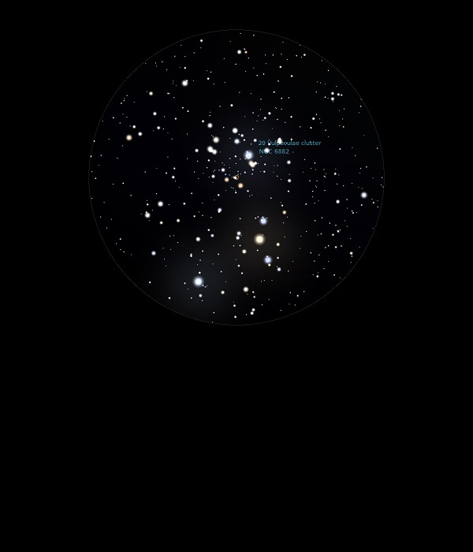

NGC 6882
Open Cluster in Vulpecular
NGC 6882
Mag 8.1
31/08/13
Open
Cluster, rather ragged in 12mm
Hint of
nebulosity around brighter stars
Merges
with NGC 6885 which surrounds it
10/09/15
Forms part of the still rather spread out and sparse 20
Vulpeculae Cluster, NGC 6885 and not an obvious difference
between them
31/08/16
Faint and only just resolved Open Cluster at Mag 8.10, close
to the brighter Mag 6.0 Open Cluster 20 Vulpeculae Cluster,
NGC 6885, C37 in which it sits but appears to be 'behind' and
much further away